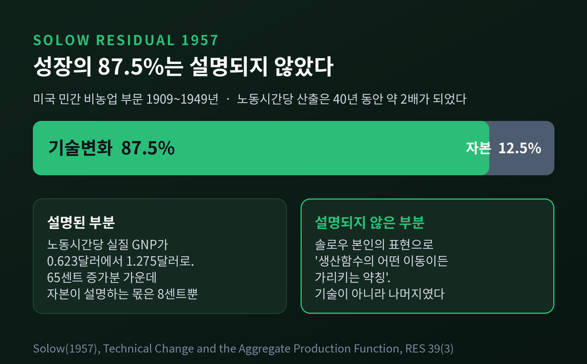
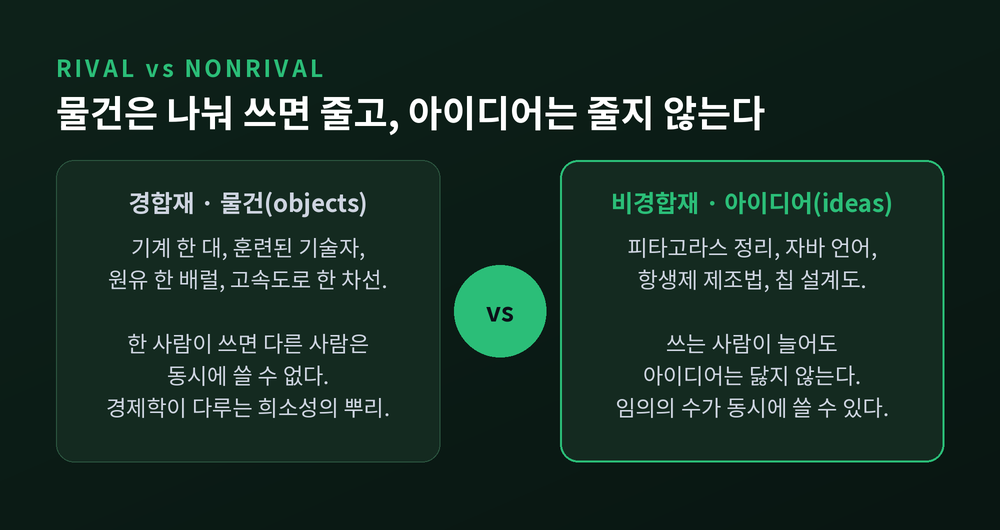
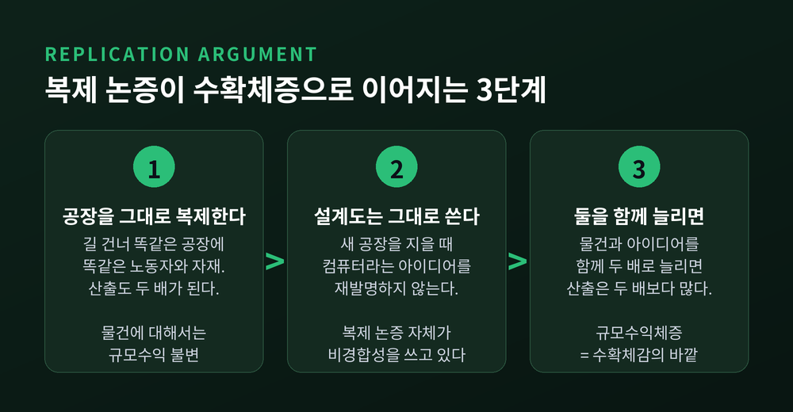
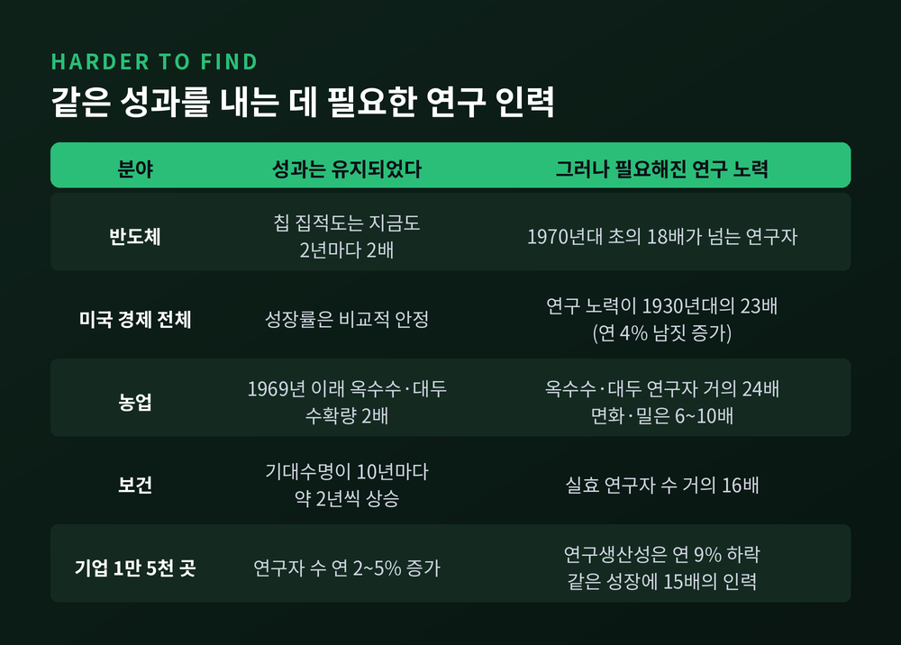

내생적 성장이론과 로머 — 아이디어는 왜 수확체감을 비켜 가는가

이번 글에서는 내생적 성장이론을 정리해 보겠습니다. 폴 로머가 1980~90년대에 세운 이 이론은 "장기 성장은 어디서 오는가"라는 질문의 답을 바꿔 놓았습니다. 핵심은 하나입니다. 아이디어는 다른 모든 재화와 성질이 다르다는 것입니다.
세 줄 요약
- 솔로우 모형에서 기술진보는 설명되지 않는 '잔차'로 바깥에서 도착했습니다. 로머는 그 상자를 열었습니다.
- 아이디어는 비경합재라 아무리 많은 사람이 써도 줄지 않습니다. 그래서 규모수익체증이 생기고, 자본이 걸려 넘어지는 수확체감을 비켜 갑니다.
- 다만 이 이론의 핵심 가정은 실증에서 흔들렸습니다. 연구생산성은 연 약 5%씩 떨어지고 있습니다.
솔로우가 남긴 빈칸 — 성장의 87.5%가 '잔차'였습니다
먼저 출발점을 봐야 합니다.
1957년 로버트 솔로우는 미국 민간 비농업 부문의 1909년부터 1949년까지 40년을 계산했습니다. 총생산함수를 놓고, 산출 증가분에서 자본과 노동의 투입 증가분을 빼 봤습니다. 남는 것이 기술변화의 몫입니다.
결과는 이랬습니다. 40년 동안 노동시간당 산출은 약 2배가 되었습니다. 그런데 그 증가분의 87.5%가 기술변화에, 나머지 12.5%만 자본집약도 상승에 귀속되었습니다. 노동시간당 실질 GNP가 0.623달러에서 1.275달러로 올랐는데, 65센트의 증가분 중 자본이 설명하는 몫은 8센트뿐이었습니다.

문제는 이 87.5%가 무엇인지 모른다는 데 있었습니다.
솔로우 본인이 논문에 적어 두었습니다. 여기서 말하는 '기술변화'는 생산함수의 어떤 종류의 이동이든 가리키는 약칭일 뿐이라고요. 작업 속도의 변화도, 노동력의 교육 수준 향상도 전부 여기 들어갑니다. 즉 잔차는 기술의 측정치가 아니라 설명되지 않은 나머지였습니다.
성장의 8분의 7을 모른다고 말하는 이론. 이것이 로머가 마주한 상황이었습니다.
로머의 출발점 — 나라마다 성장률이 너무 다릅니다
1980년대 후반, 로머는 데이터 하나를 들여다봤습니다. 100개국 이상의 1960년 1인당 소득과 그 이후 25년간의 평균 성장률입니다.
두 가지가 눈에 띄었습니다.
가장 빠른 나라와 가장 느린 나라의 성장률 격차가 약 10%포인트에 달했습니다. 그리고 초기 소득과 이후 성장률 사이에 체계적인 관계가 보이지 않았습니다. 어떤 가난한 나라는 빠르게 따라잡았고, 어떤 나라는 오히려 뒷걸음질 쳤습니다.
솔로우 모형의 예측과 어긋납니다. 모형대로라면 가난한 나라가 더 빨리 성장해 부자 나라를 비교적 빠르게 따라잡아야 했습니다.
성장률 차이는 무섭습니다. 같은 1인당 GDP에서 출발한 두 경제 중 한쪽이 연 2%포인트만 더 빨라도, 40년 뒤 국민소득은 두 배가 됩니다. 연 4%포인트 차이라면 40년 뒤 거의 다섯 배입니다.
그렇다면 무엇이 이 격차를 만드는가. 모형이 "기술진보율이 나라마다 다릅니다"라고만 답한다면, 그것은 답이 아니라 이름표입니다.
아이디어는 경합하지 않습니다
로머의 답은 분류를 다시 하는 데서 시작했습니다.
솔로우가 세계를 자본과 노동으로 나눴다면, 로머는 더 근본적으로 나눴습니다. 아이디어와 물건입니다.
물건에는 자본, 노동, 인적자본, 토지, 고속도로, 원유 한 배럴, 깨끗한 공기 일정량이 들어갑니다. 아이디어는 그 물건들을 가지고 더 많은 산출이나 효용을 만들어내는 설계도이자 지시문입니다. 미적분, 신종 항생제의 제조법, 최신 양자컴퓨터의 설계가 여기 속합니다.
둘의 차이는 경합성입니다.
물건은 경합재입니다. 한 사람이 쓰면 다른 사람이 동시에 쓸 수 없습니다. 고속도로를 달리는 차가 늘수록, 특정 외과의를 찾는 환자가 늘수록 나눠 쓸 몫은 줄어듭니다. 경제학이 다루는 희소성은 바로 여기서 나옵니다.
아이디어는 다릅니다. 피타고라스 정리를 쓰는 사람이 아무리 늘어도 정리가 닳지 않습니다. 자바 언어도, 최신 스마트폰의 설계도 마찬가지입니다. 아이디어는 사용으로 고갈되지 않습니다.

로머가 즐겨 든 예가 경구수액요법입니다. 얼마 전까지 개발도상국에서 수많은 아이가 설사로 목숨을 잃었습니다. 부모가 설사하는 아이에게서 수분을 끊는 바람에 탈수가 진행된 것이 문제의 일부였습니다. 값싼 미네랄과 소금, 약간의 설탕을 정확한 비율로 물에 녹이면 아이를 살리는 용액이 됩니다.
이 화학식은 더 많은 아이를 살릴수록 희소해지지 않습니다.
비경합성이 수확체증을 낳는 논리
여기서 로머의 논증이 시작됩니다. 짧지만 결정적입니다.
첫째, 복제 논증입니다. 공장의 산출을 두 배로 늘리는 방법 하나는 길 건너에 똑같은 공장을 짓고 똑같은 노동자와 자재를 채우는 것입니다. 그대로 복제하면 산출도 두 배가 됩니다. 경합적 투입에 대해서는 규모수익이 불변이라는 뜻입니다.
둘째, 그 복제 논증이 이미 비경합성을 쓰고 있다는 지적입니다. 새 공장을 지을 때 컴퓨터라는 아이디어를 다시 발명하지는 않습니다. 같은 설계도를 두 번째 공장에서도, 열 번째 공장에서도 씁니다. 비경합재이기 때문입니다.
셋째, 따라서 물건과 아이디어를 함께 두 배로 늘리면 산출은 두 배보다 많아집니다. 물건에 대해서만 규모수익 불변이니, 아이디어까지 합치면 규모수익체증입니다.

수확체감을 비켜 가는 지점이 여기입니다.
솔로우 모형에서 1인당 산출은 1인당 자본에 달려 있습니다. 컴퓨터 한 대를 더 넣으면 노동자 한 명이 더 생산적이 됩니다. 사람 수만큼 컴퓨터를 사야 전체가 나아집니다.
로머의 세계에서 1인당 산출은 지식의 총 스톡에 달려 있습니다. 스톡을 인구 수로 나눌 필요가 없습니다. 최초의 스프레드시트 코드를, 워드프로세서를, 인터넷 자체를 떠올려 보시면 됩니다. 아이디어 하나가 임의의 수의 노동자를 동시에 더 생산적으로 만듭니다.
예전에는 성장의 한계가 "사람 수만큼 물건을 못 채운다"였습니다. 지금은 그 제약이 아이디어에 걸리지 않습니다.
그래서 1인당 소득의 성장은 '1인당 아이디어'가 아니라 아이디어 총량의 증가에 연결됩니다. 총량이 느는 것은 어렵지 않습니다. 연구자가 늘면 아이디어가 늘고, 아이디어는 비경합재라 모두를 이롭게 하니까요.
그러면 아이디어 값은 누가 치르는가
이론에는 곧바로 난제가 따라옵니다.
규모수익체증 아래서는 모든 투입에 한계생산만큼 지불할 수 없습니다. 나눠 줄 산출이 모자라기 때문입니다. 오일러 정리를 적용해 보면 분명합니다. 경합적 투입에 한계생산만큼 지불하는 순간 산출은 정확히 소진되고, 아이디어에 지불할 몫이 남지 않습니다.
결론은 불편합니다. 완전경쟁 균형은 존재할 수 없고, 최적 배분을 분권화하지도 못합니다. 규제 없는 시장은 더 이상 "모든 가능한 세계 중 최선"이 아닙니다.
로머의 해법은 비경합성과 배제가능성을 분리하는 데 있었습니다.
순수 공공재는 비경합이면서 비배제인 재화입니다. 그런데 비경합성은 경제 환경의 속성인 반면, 배제가능성은 제도와 사회의 선택입니다. 특허 제도로도, 영업비밀만으로도 아이디어는 일정 기간 부분적으로 배제할 수 있습니다.
즉 아이디어는 순수 공공재가 아니라 비경합·부분배제재입니다.
이 틈으로 시장이 들어옵니다. 로머는 딕싯과 스티글리츠(1977)의 독점적 경쟁 모형을 성장론에 들여왔습니다. 혁신에 성공한 사람은 특허로 배타적 생산권을 얻고, 한계비용 위에 마크업을 붙여 이윤을 남깁니다. 그 이윤이 새 아이디어를 찾게 만드는 당근입니다.
비용 구조를 보면 자연스럽습니다. 첫 청사진에는 큰 고정비가 들지만, 복제에는 작은 한계비용만 듭니다. 고정비를 회수하려면 가격이 한계비용보다 높아야 하고, 그러려면 어느 정도의 독점력이 필요합니다.
당대의 다른 모형들과 비교하면 차이가 선명합니다. 솔로우에서는 아무도 아무 행동을 하지 않아도 생산성이 좋아집니다. 애로우의 학습효과 모형에서 기술 향상은 생산 과정의 우연한 부산물입니다. 루카스(1988)는 인적자본 축적을 성장의 엔진으로 놓았지만, 그 모형 안에 발명이나 신기술은 등장하지 않습니다.
로머 1990에서 장기 성장은 이윤을 좇는 기업가의 능동적 탐색에서 나옵니다.
규모효과 논쟁 — 가장 아픈 반격
이론이 아름다우면 검증은 더 가혹해집니다.
로머 모형에는 아이디어 생산함수가 있습니다. 지식의 증가율이 연구에 투입된 인적자본의 양에 비례한다는 식입니다. 연구 인력을 일정하게 유지하기만 해도 지식은 지수적으로 늘어납니다.
여기서 규모효과가 따라 나옵니다. 큰 경제일수록 연구자가 많으니 더 빨리 성장해야 합니다.
1995년 찰스 존스가 이 예측을 데이터에 대 봤습니다. 결과는 어긋났습니다. 생산성 증가율은 시간이 지나도 비교적 안정적인데, 혁신에 투입된 자원은 지수적으로 폭증했습니다. 로머 모형에 인구 증가를 넣으면 정상상태 성장률이 나오지 않고 성장률이 시간이 갈수록 폭발합니다.
존스의 수정은 간단했습니다. 아이디어가 점점 찾기 어려워지는 정도를 파라미터로 넣은 것입니다. 로머는 그 값을 0으로 놓았고, 존스는 0보다 크다고 봤습니다.
결과는 역설적입니다. 이 모형에서 장기 성장률은 인구증가율을 그 파라미터로 나눈 값이 됩니다. 성장은 여전히 R&D를 통해 내생적으로 만들어지지만, 장기 성장률 자체는 인구증가율처럼 보통 외생으로 취급되는 값에만 의존합니다. 그래서 준내생적 성장이라고 부릅니다. 보조금은 소득의 수준을 올릴 뿐, 성장률을 영구히 바꾸지는 못하는 셈입니다.
흥미로운 점이 있습니다. 이 수정판에서 비경합성의 역할은 오히려 커집니다. 준내생 모형에서도 1인당 소비는 지식의 총 스톡에 비례합니다. 솔로우의 1인당 자본과 정확히 대비되는 지점이 그대로 남습니다.
반대 증거도 있습니다. 미셸 크레머(1993)는 수십 년이 아니라 수천 년 단위로 보면, 성장률이 경제 규모와 함께 커진다는 로머의 예측이 매우 잘 들어맞는다고 보였습니다. 관찰 기간의 길이에 따라 결론이 갈리는 셈입니다.
아이디어는 정말 찾기 어려워지고 있나
존스의 지적을 실증으로 확장한 연구가 2020년 미국경제학회지에 실렸습니다. 블룸·존스·밴 리넨·웹의 「Are Ideas Getting Harder to Find?」입니다.
틀은 단순합니다. 장기 성장은 연구자 수 곱하기 연구생산성입니다. 저자들이 발견한 것은 앞의 항은 크게 늘고 뒤의 항은 급격히 줄고 있다는 사실이었습니다.

숫자가 인상적입니다.
반도체를 보면, 무어의 법칙이 말하는 집적도 2배를 지금도 지켜내고는 있습니다. 다만 그러려면 1970년대 초의 18배가 넘는 연구자가 필요합니다. 미국 경제 전체로는 연구 노력이 1930년대의 23배로 늘었습니다. 농업에서는 1969년 이래 옥수수와 대두의 수확량이 두 배가 됐지만, 그 사이 연구자 수는 거의 24배로 불어났습니다. 보건 분야에서는 기대수명이 10년마다 약 2년씩 늘어나는 동안 실효 연구자 수가 거의 16배가 되었습니다.
종합하면 연구생산성은 연 약 5%씩 떨어지고 있습니다. 12~13년마다 절반이 되는 속도입니다. 기업 1만 5천 곳을 본 분석에서는 30년 전과 같은 성장을 내려면 오늘날 15배의 연구자가 필요하다는 계산이 나왔습니다.
이 결과는 독일과 중국 데이터로도 복제되었습니다. 미국만의 현상이 아닙니다.
로머가 상수라고 가정했던 값이, 데이터에서는 뚜렷하게 0이 아니었던 것입니다.
2018년 노벨상과 정책 함의
2018년 노벨경제학상은 로머와 노드하우스에게 돌아갔습니다. 로머의 수상 사유는 "기술혁신을 장기 거시경제 분석에 통합한 공로"였습니다. 두 사람의 연구는 모두 솔로우 성장모형 위에 세워졌다는 공통점이 있습니다.
정책 함의는 두 방향으로 갈립니다. 한쪽만 말하면 정직하지 않습니다.
과소투자 쪽입니다. R&D로 만들어진 지식은 전 세계 누구에게나, 지금도 미래에도 이로울 수 있습니다. 그런데 시장은 창출자에게 그 혜택 전부를 보상하지 않습니다. 그래서 R&D는 사회적 최적보다 적게 이뤄집니다. 게다가 유인이 독점이윤의 형태로 오기 때문에, 일단 발명된 뒤에는 새 재화의 공급이 부족해집니다.
과다투자 쪽입니다. 후속 연구는 반대 경우도 보였습니다. 새 아이디어가 창조적 파괴 과정에서 기존 기업을 너무 많이 죽일 때, 또는 화석연료의 과도한 사용처럼 사회적으로 해로운 기술을 증폭할 때입니다. 품질사다리 계열 모형에서는 R&D에 오히려 세금을 매겨야 한다는 주장까지 나왔습니다.
그래서 처방은 균형의 문제가 됩니다. 노벨위원회가 제시한 특허법 설계 원칙이 이 균형을 잘 보여줍니다. 개발자에게 일정한 독점권을 줘서 만들 동기를 주되, 그 권리를 시간과 공간에서 제한해 다른 사람이 쓸 수 있게 하라는 것입니다.
R&D 보조금, 기초연구 재정, 교육. 연구자와 발명가의 노력에 영향을 주는 모든 것이 장기 전망을 바꿀 수 있다는 것. 이것이 "성장이 내생적"이라는 말의 실무적 의미입니다.
남는 비판들
이 이론이 완결되었다고 말하기는 어렵습니다. 몇 가지 한계를 함께 적어 둡니다.
첫째, 검증가능성 문제입니다. 내생적 성장모형이 정확히 측정할 수 없는 가정 위에 서 있다는 비판이 있습니다. 규모효과를 피하려고 임시방편적 가정에 기대는 경향도 지적됩니다.
둘째, 논리 구조의 취약점입니다. 챗 존스 본인의 자기비판이 날카롭습니다. 아이디어 생산함수의 선형성을 받아들이면, 비경합성과 불완전경쟁이라는 나머지 두 기여가 논리적으로는 없어도 되는 것이 됩니다. 그런데 그 선형성 가정 자체가 실증의 지지를 받지 못합니다.
셋째, 재발견 논쟁입니다. 신성장이론의 통찰 상당수는 1960년대에 이미 예견되어 있었습니다. 애로우(1962)는 정보가 한계비용이 0이라 무상 제공이 마땅하지만 그러면 투자 유인이 사라진다는 모순을 지적했습니다. 노드하우스(1969)는 존속기간이 정해진 특허에 기반한 "정보에 대한 다수의 일시적인 작은 독점들"을 명시적으로 도입했고, 그의 모형은 인구증가율에 비례하는 성장을 낳았습니다. 존스 1995 이후의 눈으로 보면 오히려 선견이었던 셈입니다. 셸(1973)은 복제 논증으로 수확체증을 도출하고 완전경쟁이 혁신을 지탱할 수 없음까지 이해했습니다.
다만 이들은 안정적인 지수 성장을 만들어내는 완결된 모형을 세우지 못했습니다. 노드하우스의 그 논문은 297회, 셸의 논문은 143회 인용되었습니다. 로머는 8만 회를 넘겼습니다. 같은 방향의 통찰이라도 공은 모형을 완성한 사람에게 돌아갔습니다.
넷째, 잔차 해석의 유보입니다. 솔로우 본인이 1957년 논문에 이미 적어 두었습니다. 혁신은 대부분 새 설비에 체화되어야 실현된다고요. 그리고 생산함수 이동으로 나타난 것의 상당 부분이 노동력의 질 향상이며, 그것 자체가 중요한 형태의 실물 자본형성이라는 점도 인정했습니다.
끝으로 한 마디만 더 드리겠습니다.
내생적 성장이론이 준 것은 낙관이 아니라 좌표였습니다. 자본은 쌓을수록 덜 보답하지만, 아이디어는 그 규칙의 바깥에 있습니다. 그 차이를 만드는 단 하나의 성질이 비경합성이었습니다.
물론 현실은 이론보다 인색합니다. 연구생산성은 12~13년마다 절반이 되고 있고, 우리는 같은 속도를 유지하기 위해 점점 더 많은 사람을 그 일에 보내고 있습니다. 로머의 이론이 맞는다면 그것은 성장이 저절로 굴러간다는 뜻이 아니라, 성장이 우리가 어디에 사람과 돈을 보내느냐에 달렸다는 뜻입니다.
"자본은 나누어 써야 하지만, 아이디어는 나누어도 줄지 않습니다."
그래서 성장의 열쇠가 여전히 우리 손에 있느냐고 물으신다면, 저는 그렇다고 답하겠습니다. 다만 그 열쇠는 점점 무거워지고 있습니다.